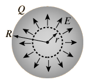
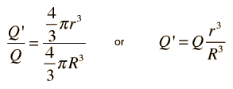
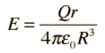

Inside a Sphere of Charge
|

|
The electric field inside a sphere of uniform charge is radially outward (by symmetry), but a spherical Gaussian surface would enclose less than the total charge Q. The charge inside a radius r is given by the ratio of the volumes:

|
| and the electric field is |
 |
Note that the limit at r= R agrees with the expression for r >= R. The spherically symmetric charge outside the radius r does not affect the electric field at r. It follows that inside a spherical shell of charge, you would have zero electric field.
|
Index
Electric field concepts |